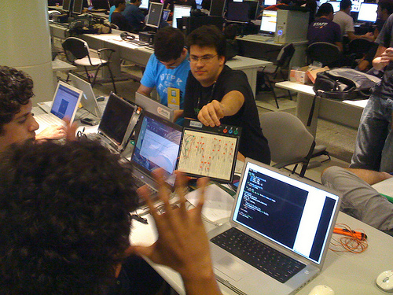

Neste fim de semana eu participei do Yahoo! Open Hack Day Brazil. O evento foi feito pelo Yahoo! no Senac de Santo Amaro e as pessoas se divertiram com as APIs abertas do Yahoo!, fazendo mashups e algumas outras maluquices. Durou das 08:00 de sábado até as 20:00 de domingo, 36 horas ininterruptas de hacking.
Só tenho coisas boas a dizer sobre o evento. O ambiente era muito confortável, a comida estava muito boa e fomos atendidos 100% do tempo, os hacks estavam muito legais, eles nos pegaram e levaram até estações de metrô e trem. Enfim, a organização do Yahoo! está de parabéns.
Eu como todo bom engenheiro eletricista fui ao HackDay munido de uma protoboard, muito fio, vários LEDs e mais alguns componentes, ainda sem uma idéia mas com a certeza que seria útil.
O pessoal do GruPy-SP devidamente uniformizado formou um time e aos poucos várias pessoas foram se juntando ao time. Éramos um time enorme, com 11 pessoas. Tivemos várias idéias, como pode ser visto no brainstorm abaixo:
O projeto era um eventômetro: um medidor de quanto burburinho um evento está gerando no Twitter e Flicker. Várias idéias foram dadas no brainstorm: um algoritmo de clustering para posts no Twitter e Flickr, usar o Quartz Composer e o Cocos2D para gerar uns efeitos legais, Yahoo! Blueprint para fazer uma aplicação para celular, eletrônica para sair do comum e mais um monte de outras coisas.
Eu fiquei com o hardware do nosso hack, junto com o Luiz Vitor Martinez Cardoso. Depois que terminamos o hardware eu fui para o script que baixava as informações do Twitter e Flickr.
Eu mostrando a protoboard
A maluquice acima é um Arduino controlando os LEDs e o buzzer na protoboard. Os LEDs formam a palavra Yahoo! e piscam com uma frequência determinada pela quantidade de posts sobre o evento no Flickr na última hora. A quantidade de letras acesas do Yahoo! depende da quantidade de posts sobre o evento no Twitter na última hora. O buzzer tocava uma musiquinha cuja velocidade era a mesma com que os leds piscavam. Tudo era controlado pelo Arduino, uma plataforma aberta de hardware muito fácil de começar a fuçar, que recebia os dados do computador pela USB.
Usar os LEDs chamou muita atenção no evento, o tempo todo tinhamos jornalistas e outros participantes curiosos em saber o que era aquilo tão diferente.
Também tinhamos uma aplicação feita com Cocos2D que mostrava os últimos posts no Twitter e Flickr.
No final, não ganhamos os prêmios originalmente propostos, mas ganhamos outro prêmio. E a razão é bem simples: nosso projeto era bastante inútil, usava só uma API do Yahoo! (a do Flickr) e tinha um time muito maior que os outros. Mas ele era muito legal e diferente, então eles criaram mais 4 categorias e aí sim ganhamos um prêmio. A categoria foi chamada “What the hack was that?”, que reflete bem a surpresa com o nosso hack.
Concluindo, foi um fim de semana muito divertido, fiquei feliz com o nosso hack, com as pessoas que conheci, com os hacks legais apresentados e claro, com o prêmio.
Lameiro feliz com o prêmio


.gif)
{kind=link}
{kind=link}
{kind=link}
{kind=link}